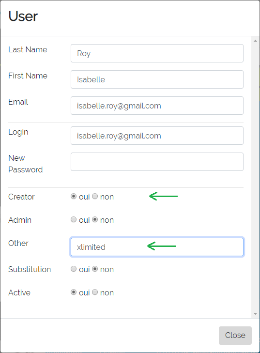
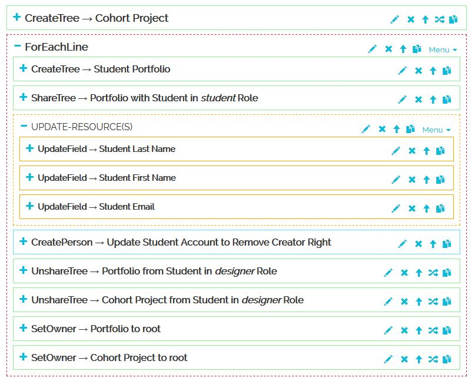
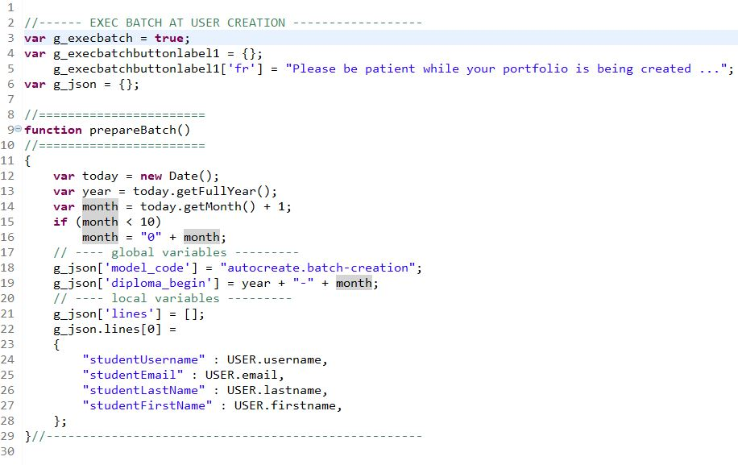
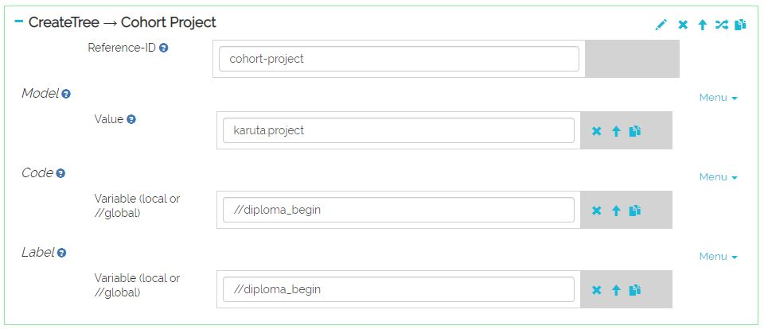
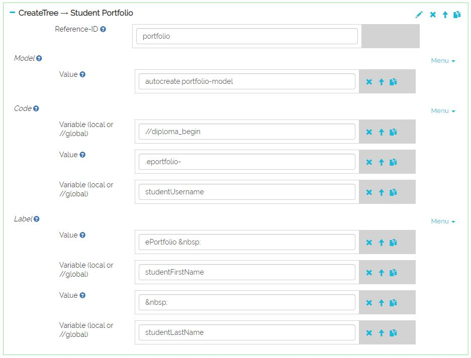
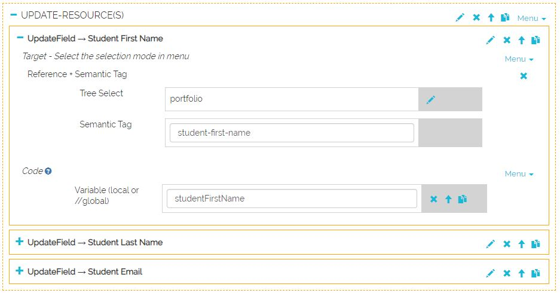
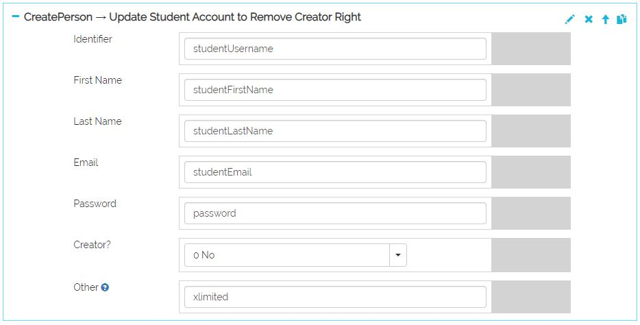
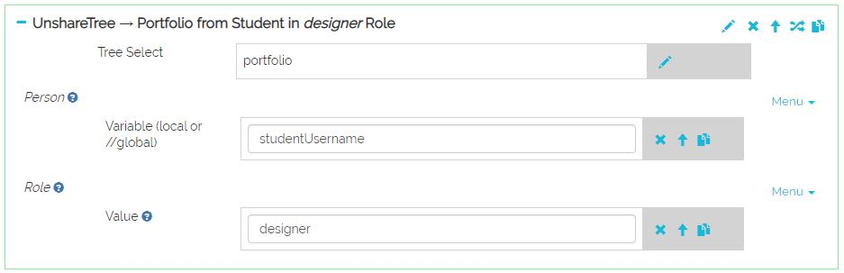
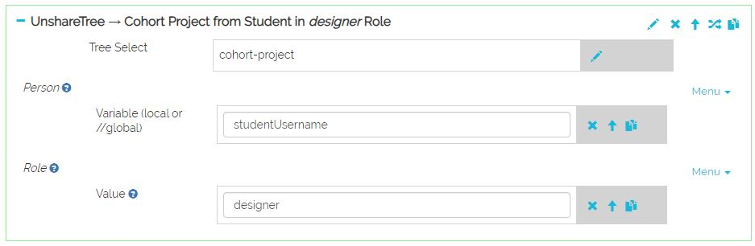
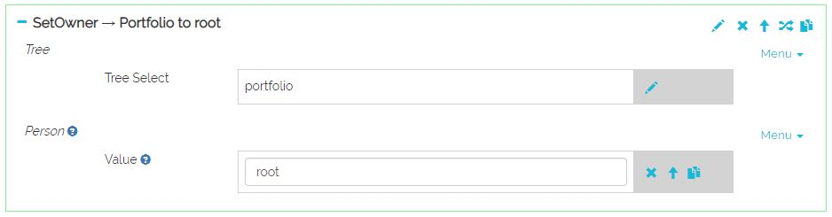

It is possible to automate the creation of a portfolio upon the fist time a user logs into Karuta. In
that case, Karuta will executre a batch created by the designer and the specified in the
application/js/specific.js file.
Execution Condition
For the creation batch to execute upon the user's fist connection, the user account must have the
Creator right — which should be removed at the end of the batch execution. The account must
also have the xlimited instruction in the field Other.

NOTE: if CAS is used, Karuta automatically creates the user account with the CAS identifier
as username, and then sets the Creator right and xlimited instruction the field Other.
Step 1 — Backend Configuration
In the backend's configKaruta.properties configuration file, the following values must
be set:
- casCreateAccount=y
- createAsDesigner=y
Step 2 — Writing the Creation Batch
The batch must include the instructions to create one or more portfolios for the user and then
share these portfolios with said user in the desired role. In the end it must also:
- remove the user's Creator right;
- unshare the new portfolios from the user in the designer role;
- Change the ownership of the new portfolios to root.
Automatic creation batch example:

Download this batch model here
or see the detailed explanation of the model at the bottom of the page.
Step 3 — Application (Frontend) Configuration
The creation batch and the variables it refers to must be specified in the frontend's
application/js/specific.js file. Also, the g_execbatch variable on line 3 must be
set to true.

Creation Batch Details (from Step 2)
Creation of a project for the cohort
In our example, a project will be created for the cohort if it does not already exist (if this is
the first student of this cohort to log in). The project code and label are composed of the system's
year + month (hence a new cohort every month) as specified by the global variable defined in the
specific.js file.

Instanciation of the user's portfolio

Sharing the new portfolio with the user in the appropriate role

Updating the Profile resources in the portfolio
In our portfolio model, we want to pre-fill the student's name and email.

Updating the user account to remove the Creator right
We use the create-person element to update an existing account.

Unsharing the portfolio from the user in the designer role
Automatic creation of the portfolio from the student account's has made the student the portfolio's
designer, but the student must not have more that one role in the portfolio.

Unsharing the cohort project from the user in the designer role

Changing the portfolio ownership to root
As with the previous element: the creation of the portfolio from the student's account has made
him or her owner of the portfolio.

Changing the cohort project ownership to root